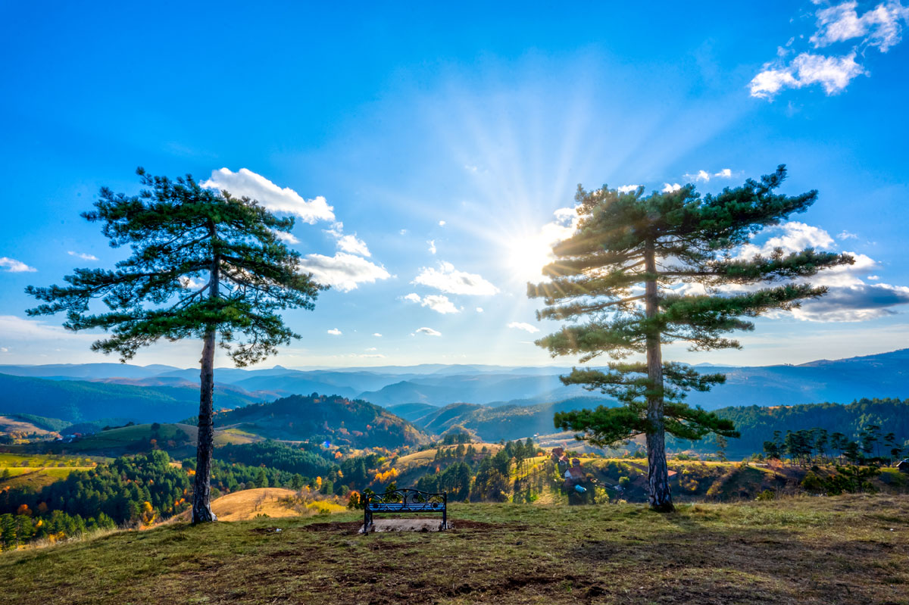
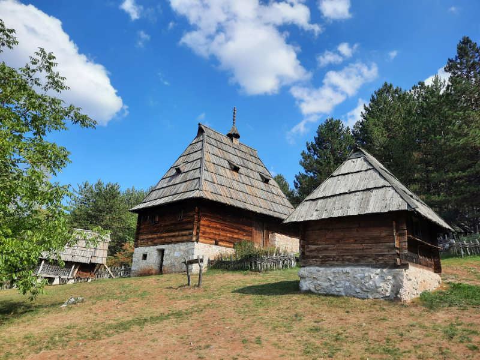
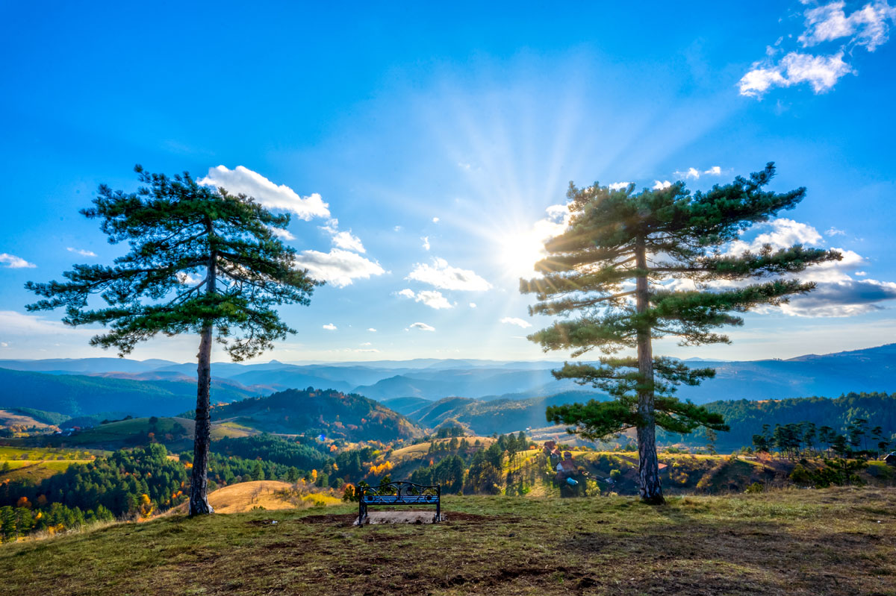
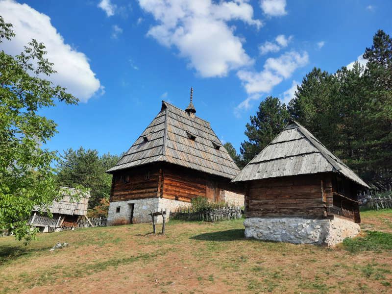
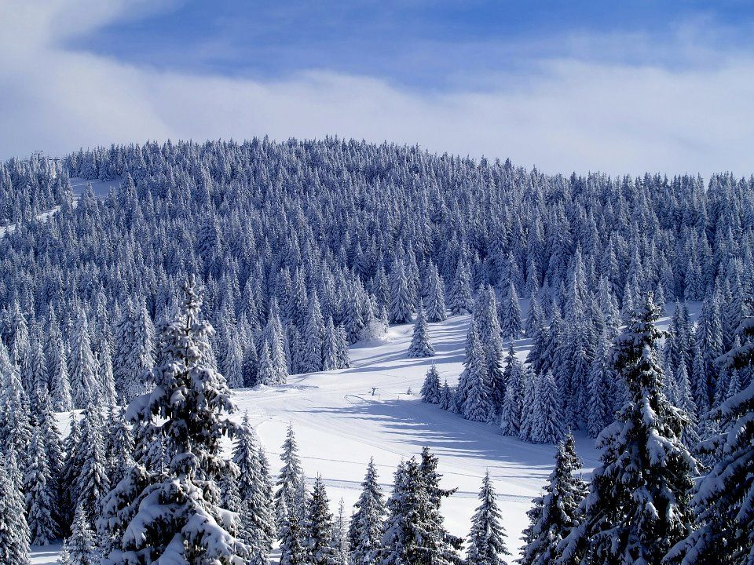
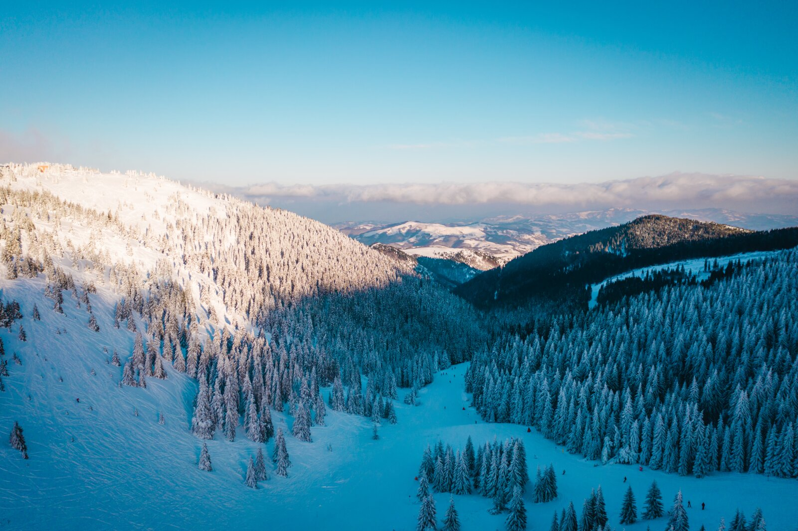
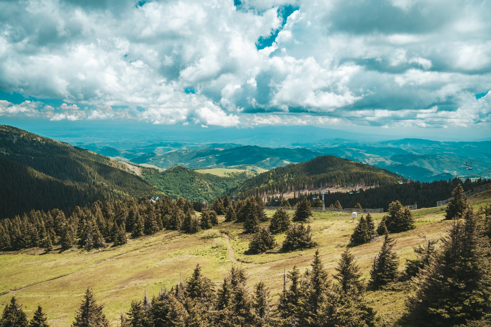
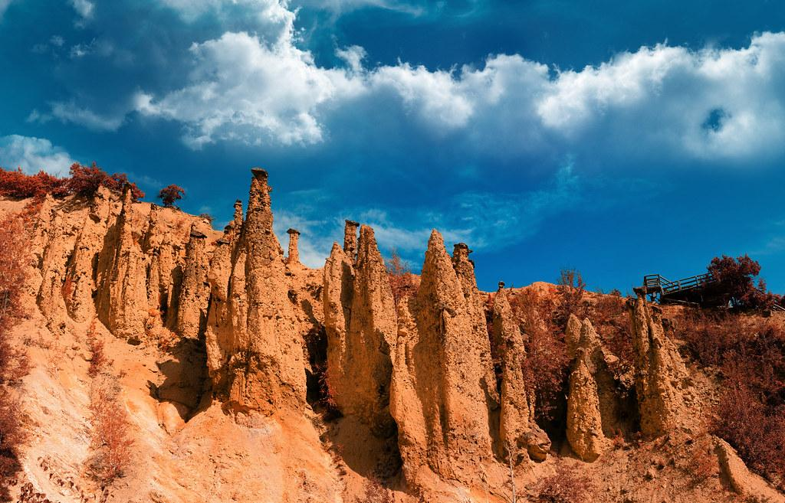
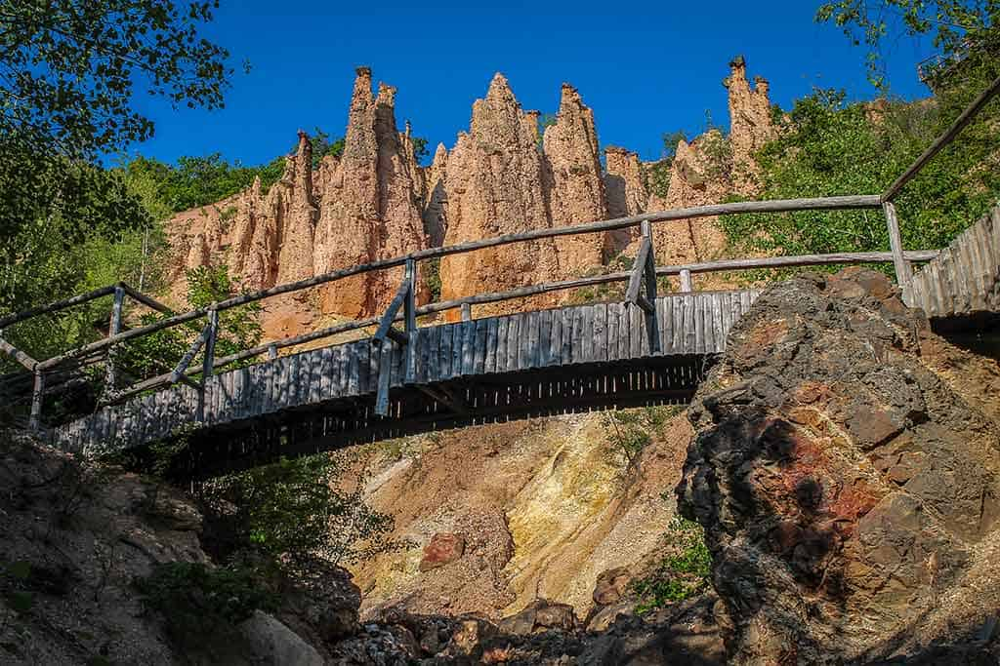
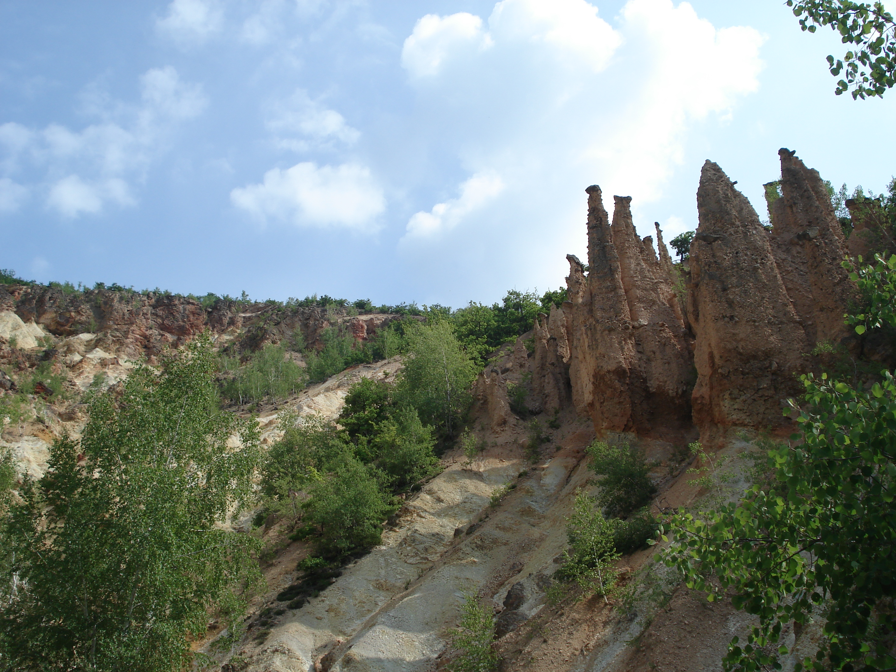

Популарне дестинације
Златибор
Златибор је планински и природни парк у Србији, који се простире на површини од око 1.000 км, дугачак је 55 км и широк до 20 км. Пружа се у правцу северозапад-југоисток. Највиши врх је Торник (1.496 м). Познато је летовалиште и зимовање, али и климатско лечилиште. Златибор се налази у северном делу области Старог Влаха, пограничном подручју између Рашке, Херцеговине и Полимља. Административни центар Златибора је град Чајетина. Јужну и источну границу Златибора чине реке Увац и Велики Рзав. Златибор се на западу граничи са Босном и Херцеговином, селима Мокра Гора, Семегњево и Јабланица. Златибор је одувек имао велики гранични значај. На брду Цигли код Јабланице и данас се препознаје граница Србије са два царства – Аустроугарском и Турском. Златибор се налази на пола пута од Београда ка Црногорском и Дубровачком приморју. Преко њега пролазе многи важни магистрални и железнички путеви, укључујући и пругу Београд-Бар. Најближи већи град је Ужице.
 



Копаоник
Копаоник, највећа планина Централне Србије пружа се разгранатим гребеном у дужини од 82 километра, правцем од подбрђа изнад Косовске Митровице, на северозапад преко низа врхова виших од 1600 метара, до највишег дела масива тзв. Равног Копаоника са врховима: Гобеља (1934 м), Караман Вучак (1936 м), Суво Рудиште (1976 м) и Панчицев врх (2017 м). Северна граница масива одвојена је од масива планине Жељин Јошаничком реком и Козничком реком.
  Ђавоља Варош
Ђавоља Варош је природни геолошки локалитет који се налази у оквиру националног парка Ђавоља Варош, у јужном делу Србије, близу града Ниш. Ова природна атракција представља један од најинтересантнијих и најфасцинантнијих природних феномена у Србији, позната по својим необичним каменим формацијама, које изгледају као стубови, стена или фигуре, те је добила назив по својој мистичној и натприродној атмосфери.
  